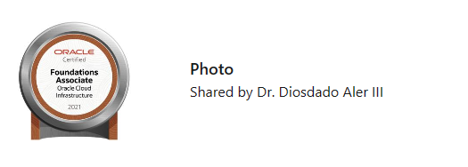
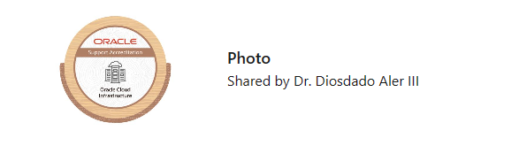
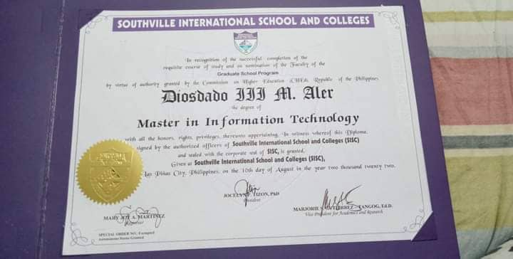
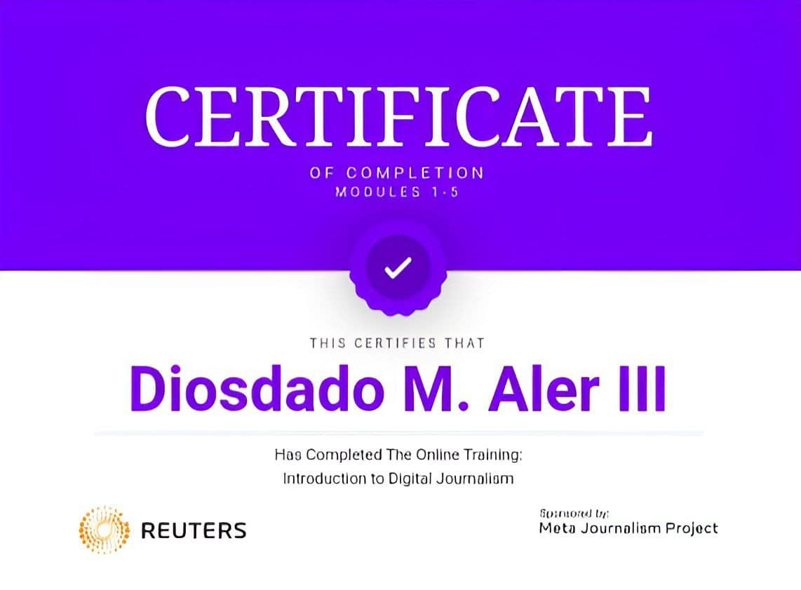
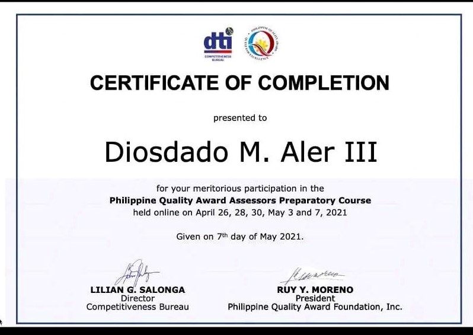
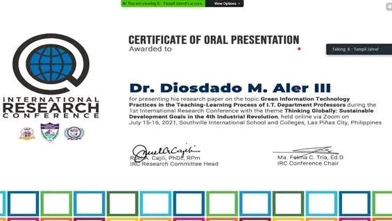
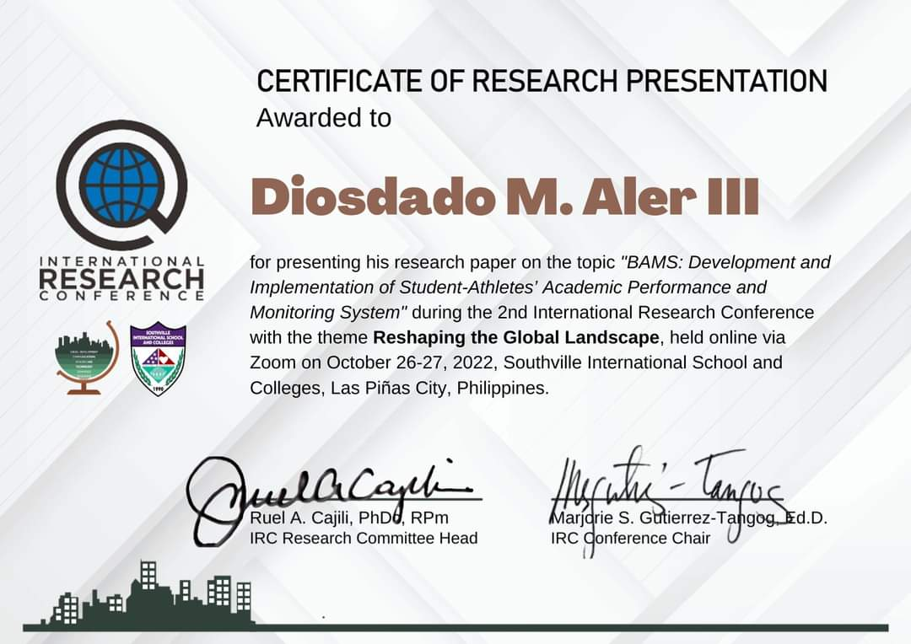

- First Place - Paper Presentation (Technology, Engineering and Sciences Category , 3rd International and Annual Convention “ Philippine Association of Extension Program Implementers (PAEPI-Global), Bahay Kalinaw University of the Philippines Diliman, Quezon City,
February 22-23, 2016

- Outstanding Organization Moderator, Gabi ng Parangal San Beda College of Arts and Sciences March 2013

- Foundation Associate Oracle Clound Insfrastructure


- Master In Information Technology

- Completed The Online Training: Introduction to Digital Journalism

- Participaion In the Philippine Quality Award Assessors Preparatory Course

- Certificate of Oral Presentation: International Research Conference


- Top Ten Faculty Members on Student Evaluation (ranked 4th) -- San Beda College SY 1996-1997 “ Oct 24, 1997
- Silver Medalist “ Oratorical Contest “ 1st Year High School Level, National Teachers College, October 1982
- PD 451 Scholar June 1985
- OWWA-SESP Scholar 1993-1995